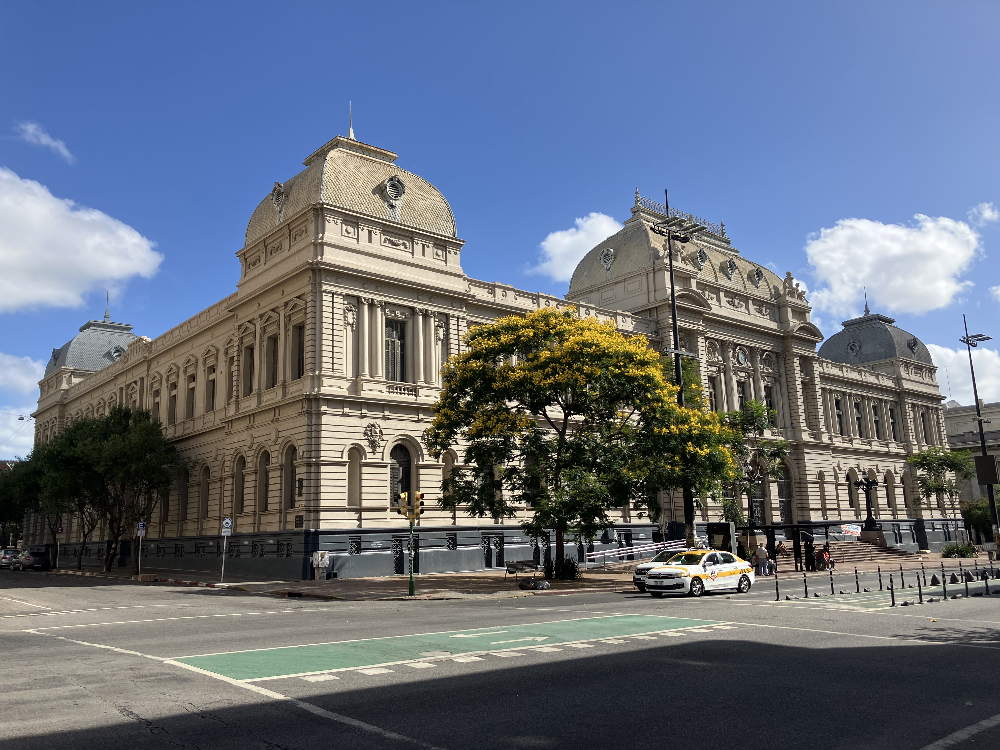

Montevideo
Historic churches, academic buildings, public institutions and elegant monuments preserved across Montevideo.
World Architectural Heritage
Discover remarkable buildings that shaped civilizations. Explore carefully curated collections of iconic architecture, from grand civic monuments to historic universities and churches.
Explore collection